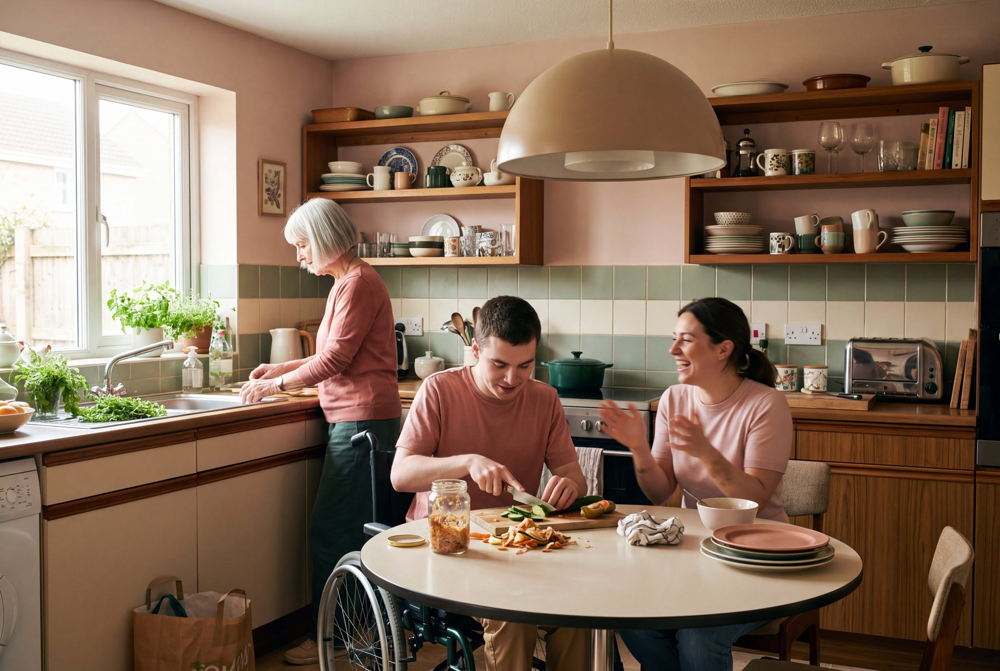
01
At home
Personal care, the cooking, the washing, the shopping. The unremarkable things that make a day work, done the way you like them done rather than the way the manual says.
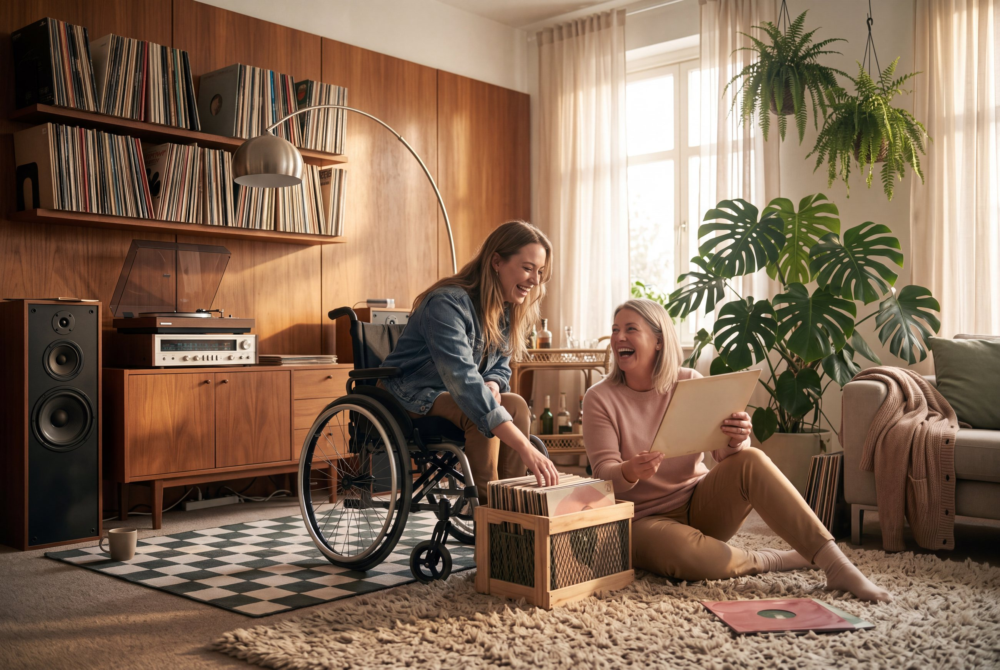
Harmony Care started because Victoria could not find support that fit her own family, so she built it. You decide what good looks like. We turn up, make it happen, and get out of the way.
See what we do
Personal care, the cooking, the washing, the shopping. The unremarkable things that make a day work, done the way you like them done rather than the way the manual says.
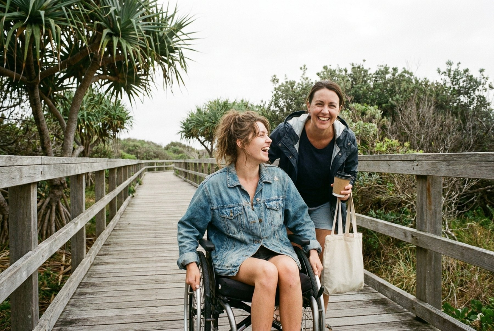
Appointments, work, and the things you would rather be doing. We drive, we come along, or we hand the keys over and clear off.
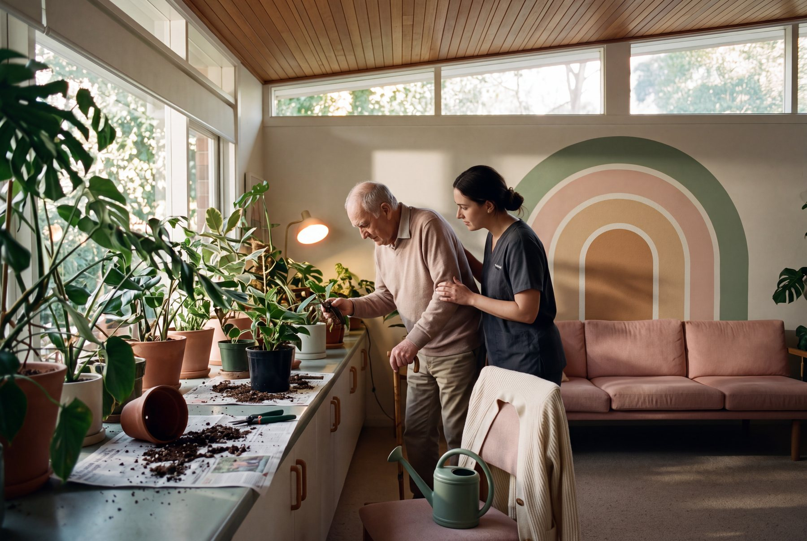
Your own place, or a shared one. Enough support to make it work. Never so much that it stops being yours.
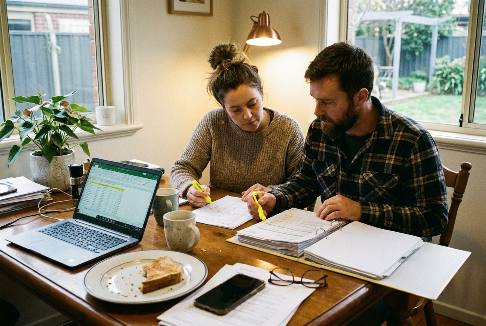
Coordination and recovery coaching. We read the plan, make the calls, and translate the whole thing out of acronym.
When my child was diagnosed with autism I did not see a problem. I saw a kid who got to be exactly himself.
What I could not find was support that kept up. Services were scattered, hard to reach, and rarely built around the person in front of them. I went back to work in mental health and watched the same thing from the inside.
Then one day my kids said: Mum, you care so much, you could really make a difference.
So the name is theirs. Harmony is built from the first letters of my four children’s names, and they are still the reason for all of it. The promise is to you.
Victoria ScilipoteFounder
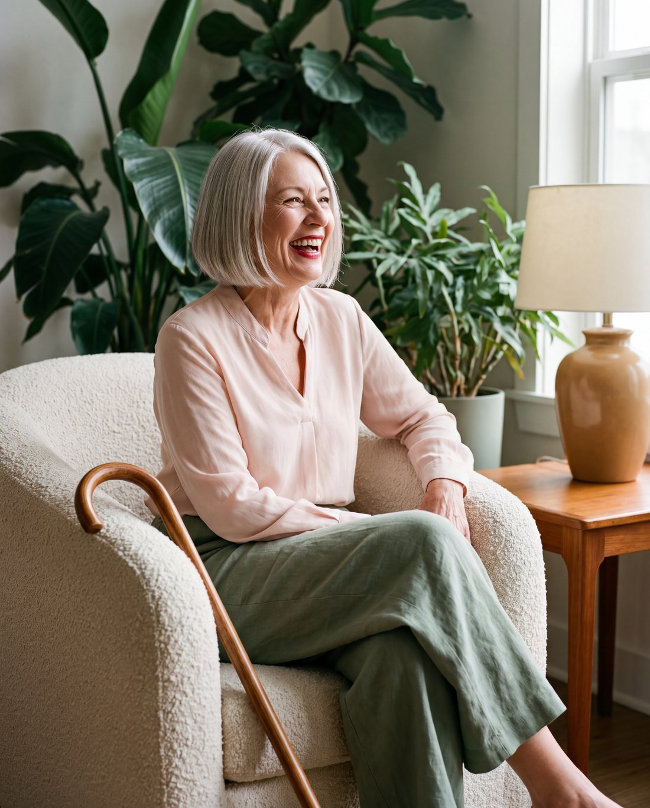
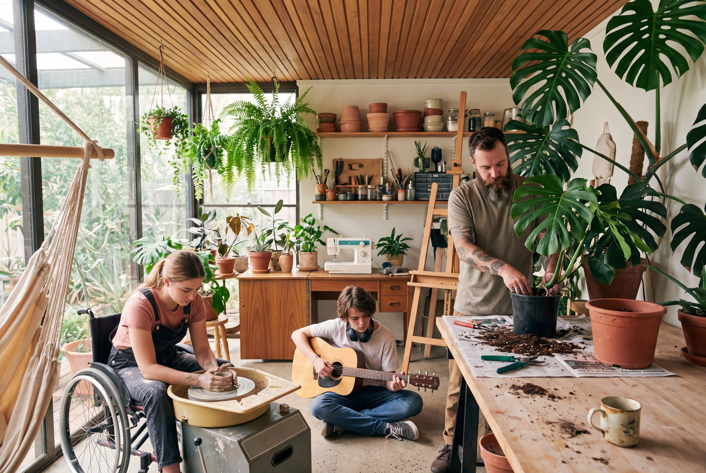
Call or email. No intake pack, no hold music. We listen, and we say so plainly if we are not the right fit.
We work out what good support looks like for you and write it down, so everyone is working off the same page.
You are matched with workers who suit you, not whoever happened to be free. You get a say. You can change your mind.
We ask how it is going and we act on the answer. If it is not working we change it, not you.
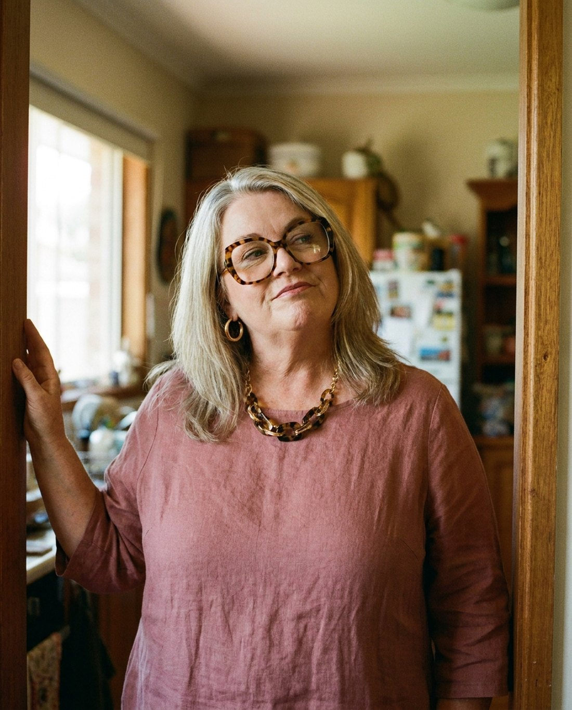
Harmony Care was started by Victoria Scilipote, who has spent her working life in disability and family support and got tired of watching people be handed a service instead of asked a question.
Counselling, social work, education, healthcare. Different disciplines, one reason for being here. We stay small so you know who is walking through the door, and so the person you talk to is the person who can change something.
Independence, dignity, choice and inclusion. Four words we measure ourselves against, not four words on a wall.
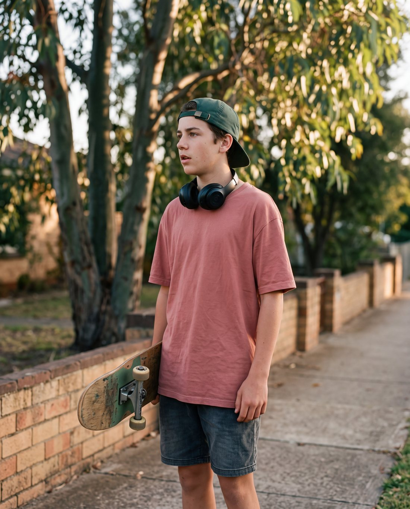
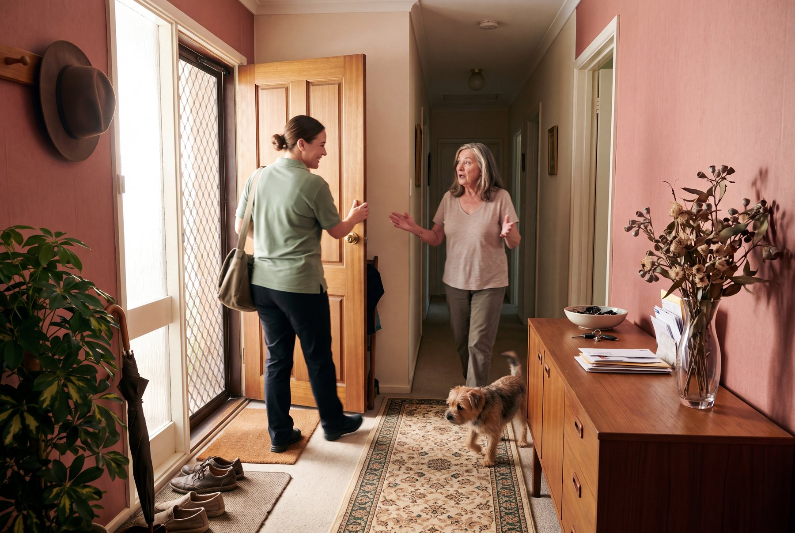
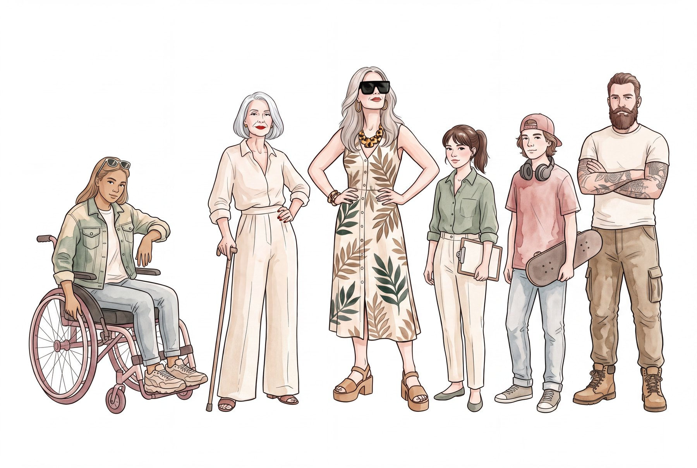
Personal care and daily personal activities, at home and in the community.
The cooking, the washing, the shopping, the tidying. Kept on top of, not taken over.
Getting out, joining in, and building the connections that make a week worth having.
Shared programs where you want them, one to one where you do not.
Building the practical skills you want, at the pace you want them.
Planning, shopping and cooking, tailored to what you actually like eating.
Lifts to appointments, work and everything else. Insured, licensed, on time.
Support in your own home or a shared one, arranged around your tenancy and your terms.
Making a shared household work for everybody living in it.
We read the plan, make the calls, and translate it out of acronym.
For when the situation is complex and needs someone who has seen complex before.
Working alongside mental health, at your pace, on your goals.
Support to find work or study, and to keep it once you have it.
Complex bowel care, enteral feeding and catheter management, by trained staff.
Putting a behaviour support plan into practice properly, and reviewing whether it is working.
No. If you are still working out whether you are eligible, or waiting on a decision, call anyway. We will tell you what we know and point you at the right people for the rest.
You meet them first, and you get a say. If a worker is not the right fit, you tell us and we change it. No awkwardness, no explanation required.
Then you stop, or you change it. Your plan is yours. We will make the handover clean and give you everything you need to take elsewhere.
Often, yes. A lot of what we do sits around the household rather than a single person. Ask, and we will be honest about what we can and cannot do.
It depends on what you need and where you are. Small things can start quickly. Complex supports take longer to set up properly, and we would rather be honest about that than promise a date we will miss.